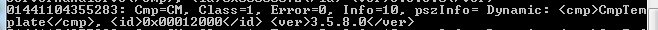
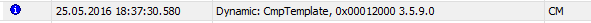

Runtime Configuration¶
Please also look into CODESYSControlV3_Manual, chapter 10.2 Configuration.
Add your component to the configuration of the runtime system (“tell the component manager to load and initialize your component”).
The method depends on the linking method.
Systems with dynamic/mixed loading of additional components (Windows, Linux, VxWorks, …):
Just add the name of the component to the CODESYSControl.cfg runtime configuration file. It has to be appended to the section [ComponentManager], for example:
[ComponentManager] Component.1=CmpTargetVisuStub Component.2=CmpCodeMeter Component.3=CmpWebServer Component.4=CmpWebServerHandlerV3 Component.5=CmpTemplate
Please note that the numbering is subsequent (Component.4 followed by Component.6 would not be recognized).
Systems with static linking of additional components (embedded systems)
Add the component C source file to the workspace or makefile of the runtime system
In your main runtime C header file, add the component to the list of components in #define COMPO_INIT_DECLS
In your main runtime C header file, add the component to the list of components in COMPO_INIT_LIST (or COMPO_DYNAMIC_INIT_LIST)
You can check if your component is loaded with the output of the logger in CODESYS device view, or in the console output of the runtime at startup.
For example, console output like this can be expected:

Or in the PlcLogger:

Alternative: you can check if the component was added correctly, by setting a breakpoint inside the ComponentEntry or the HookFunction of this component.